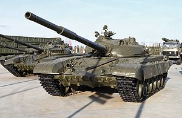
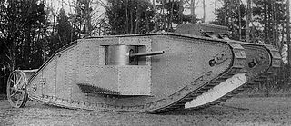

Развитие танкостроения в СССР.
В России одними из первых были построены танк Пороховщикова и царь-танк Лебеденко. Каждый из них был изготовлен лишь в одном — опытном экземпляре. Военное ведомство Российской империи внимательно следило за применением странами Антанты — а впоследствии и Центральными державами — нового вида боевой техники — танков. Военные понимали и признавали исключительную полезность вездеходных боевых машин в условиях русского бездорожья. Помимо зарубежного опыта, в этой области у России имелись собственные конструкторские наработки. Их появлению во многом способствовал солидный опыт создания бронеавтомобилей, а также достаточно мощная промышленность, способная осуществить выпуск таких несомненно передовых для своего времени изделий, как танки. И хотя первые «опыты» России на этом поприще нельзя назвать удачными — ни крохотный Вездеход, ни ужасающий Царь-танк не обладали сколько-нибудь реальной боевой ценностью — к 1917 году появились и вполне осуществимые проекты, такие как так называемый танк Рыбинского завода. Кроме того, имелись вполне успешные опыты создания боевых машин на базе полугусеничных тракторных шасси — таковым являлся бронированный трактор Гулькевича. Таким образом, к началу 1917 года Российская империя уже приближалась к моменту выпуска собственных вездеходных боевых машин. Однако, для ускорения оснащения армии вездеходными боевыми машинами, было решено закупить их за рубежом — во Франции. Выбор военных поначалу пал на средние французские танки Schneider CA1, и осенью 1916 года на соответствующем предприятии был размещён заказ на ни много, ни мало 390 танков этого типа со сроком поставки к зиме 1917 года. Впоследствии, однако, в результате изучения опыта боевого применения французских танков и сравнения их характеристик, ГУГШ РИА аннулировало старый заказ и разместило новый, на аналогичное количество лёгких танков Рено FT. Однако две революции 1917 года и последовавший за ними хаос далеко и надолго отодвинули эти планы с повестки дня. Таким образом, первыми танками, оказавшимися на русской земле, стали британские и французские машины, в небольшом количестве поставленные странами Антанты в 1919 году в виде военной помощи Добровольческой армии генерала А. И. Деникина. Во время Гражданской войны танки использовала Белая армия, которые она получала от стран Антанты в небольших количествах. Один из захваченных красноармейцами танков Рено FT весной 1919 года был послан в Москву, разобран и исследован. Таким образом, проблема создания отечественного танка была решена созданием танков типа М на основе конструкции французского Рено FT. Первый из танков типа М получил имя Борец за Свободу тов. Ленин. В течение 1920—1921 годов было изготовлено 15 танков. Весной 1921 года в связи с окончанием Гражданской войны и интервенции проект был свёрнут. В боевых действиях эти танки не участвовали, их использовали в сельхозработах — как тракторы — и на военных парадах.Основные составляющие части танка
Вооружение
Основным вооружением танка является танковая пушка, устанавливаемая во вращающейся башне. Пушка танка в большинстве случаев используется для стрельбы прямой наводкой по настильной траектории. Так же современные танки, как правило, имеют минимум два пулемёта, один из которых спарен с пушкой, что позволяет вести из него точный эффективный огонь в любых условиях, используя прицельные приспособления пушки, другой установлен на башне и используется в качестве зенитного для борьбы с вертолётами противника и для целеуказания. На некоторых танках ракетное вооружение используется в качестве дополнительного к пушечному, более того некоторые модели танков имеют установленные автоматические миномёты применяющиеся не только для навесной стрельбы, но и для разбрасывания противопехотных мин.Защита
Современные танки имеют сложную по конструкции систему бронирования — различают пассивное бронирование и динамическую защиту. Кроме основной брони, на танк часто устанавливаются дополнительные противокумулятивные экраны, комплексы активной защиты, системы постановки дымовых завес, системы уменьшения заметности, оптико-электронного подавления и.т.д.. Конструкторы постоянно стремятся улучшить защищённость танков. Кроме развития описанных выше способов защиты, рассматриваются и новые, перспективные методы. Одним из них является «электрическая броня». Суть этого метода защиты состоит в том, что броня разделяется на два слоя, с расположенным между ними слоем изолятора. Внутренняя часть заземлена, в то время как на внешнюю подаётся электрический заряд. Противотанковый снаряд, пробив внешний слой брони, достигает внутреннего и таким образом вызывает замыкание. Сильный электрический разряд вызывает уничтожение снаряда.Двигатель и ходовая часть
На ранних этапах развития танкостроения обычно использовался бензиновый карбюраторный двигатель автомобильного и авиационного типа включая моторы звездообразной компоновки. Перед Второй мировой войной, а также в ходе её, получили распространение дизельные двигатели, ставшие основным типом танковых моторов во всём мире со второй половины 1950-х, позже заменённые многотопливными двигателями, а в последние два-три десятилетия и газотурбинными двигателями. Первым серийным танком с ГТД в качестве основного двигателя стал советский Т-80. Практически все танки в истории имели гусеничный движитель, прототип которого был запатентован ещё в 1818 году французом Дюбоше, однако некоторые танки, например, лёгкие колёсно-гусеничные танки БТ в СССР или танк Кристи в США, могли передвигаться на колёсах. Гусеничная конструкция ходовой части позволяет танку без труда передвигаться в условиях бездорожья, по различным типам грунтов. Гусеницы современных танков стальные, с металлическим или резинометаллическим шарниром, по которым танк едет на опорных катках как правило, обрезиненных; в современных танках их количество от пяти до семи. В некоторых моделях верхняя часть гусеницы, провисая, опирается на опорные катки, в других используются специальные поддерживающие катки малого диаметра. Как правило, в передней части находятся направляющие колёса, которые совместно с механизмом натяжения обеспечивают требуемое натяжение гусеницы. Гусеницы приводятся в движение посредством зацепления их ведущим колесом, крутящий момент на которое подаётся от двигателя через трансмиссию. Путём изменения скорости перематывания одной или обеих гусениц танк может совершать поворот, в том числе и разворот на месте. Разработка Т-72 началась в 1967 году. Были проведены сравнительные испытания танков Т-64А с двигателем В-45 с эжекционной системой охлаждения. В ноябре 1969 года на эти машины стали устанавливать двигатели В-46 мощностью 780 л. с. и ходовую часть новой конструкции. Изготовленному с указанными изменениями образцу был присвоен индекс «объект 172М». 7 августа 1973 г. совместным постановлением ЦК КПСС и Совета Министров на вооружение Советской Армии был принят танк Т-72. Броневой корпус танка представляет собой жёсткую коробчатую конструкцию, собираемую из листов и плит катаной гомогенной броневой стали и комбинированной брони. На Т-72 верхняя плита выполняется из комбинированной брони, состоящей из стального наружного, стеклотекстолитового и стального внутреннего слоёв, а нижняя плита — из катаной гомогенной броневой стали. Остальная часть корпуса выполняется полностью из катаной гомогенной брони. Крыша корпуса состоит из двух бронелистов, а днище имеет корытообразную форму и состоит из трёх штампованных деталей, имеющих ряд выштамповок для повышения жёсткости. Моторно-трансмиссионное отделение отделяется от боевого поперечной броневой перегородкой. На каждом борту танка для защиты от кумулятивных боеприпасов установлены по четыре поворотных экрана из 3-мм штампованных листов алюминиевого сплава. Основным вооружением Т-72 являлась 125-мм гладкоствольная пушка. С пушкой спарен 7,62-мм пулемёт и зенитный пулемёт на открытой турельной установке. На Т-72 устанавливались различные модели V-образных 12-цилиндровых многотопливных четырёхтактных дизельных двигателей жидкостного охлаждения. Подвеска катков независимая, торсионная. Ходовая часть каждого борта состоит из 3 поддерживающих катков и 6 обрезиненных опорных катков с балансирами и лопастными амортизаторами на первом, втором и шестом, направляющего катка и ведущего колеса заднего расположения. Танк оборудован устройством самоокапывания, которое приводится в рабочее положение за 2 минуты. Существует огромное множество модификаций советского танка Т-72. Наиболее удачные и распространённые это Т-72М, Т-72АВ, Т-72Б, Т-72Б3 и Т-72Б3М. Впервые Т-72 применили при боевых действиях в 1982 году в Ливане, в долине Бекаа. 9 июня 76-я и 91-я сирийские танковые бригады 1-й дивизии, вооружённые Т-72 попали в окружение на юге от озера Карун. Ещё одной страной, активно использовавшей Т-72, стал Ирак. Первые 100 машин советского производства были получены Ираком в 1979-80 годах. Экспортные модификации отличались конструкцией броневой защиты лобовой части башни, а также системой противоатомной защиты и комплектацией боеприпасов. Следующей войной, где участвовали иракские танки Т-72, стал захват Кувейта в 1990 году. Кувейт тоже располагал такими танками югославского производства. Т-72 стал самым широко используемым танком чеченского конфликта. Они были самыми многочисленными как среди федеральных войск так и среди бандформирований Дудаева. В ходе войны в Южной Осетии Т-72 применялись с обеих сторон, находясь на вооружении грузинских и российских войск. В 2014 и 2015 годах Нигерия купила несколько десятков танков Т-72для борьбы с исламистскими террористами. Индия применяла Т-72 в ходе миротворческой операции на Шри-Ланке.Так сколько же стоит танк Т-72?
С учетом экспортных поставок модернизации и модификации Т-72 появлялись и в других странах. По лицензии танк изготавливался в Югославии, Польше, Чехословакии и Индии, на его основе в данных странах разрабатывались и собственные модели. После распада СССР свои версии появились у Украины, Белоруссии, Казахстана, Азербайджана. Собственные модификации Т-72 имелись также у Израиля, Румынии, Ирака. По последним оценкам стоимость базовой модели Т-72 составляет около 22 млн рублей. Оснащение устаревших моделей современными приборами и вооружением обходится значительно дороже. К примеру, чтобы улучшить Т-72Б до Т-72Б3, необходимо затратить около 50 млн рублей по ценам на 2013 год. Operation Flashpoint: Cold War Crisis / ArmA: Cold War Assault: средний танк ВС СССР. В игре «Arma 2» Т-72 — одна из единиц техники, доступная игроку. В игре «Call of Duty: Modern Warfare» Т-72 — одна из боевых машин противника; в следующих частях серии Т-72 также будет присутствовать на вооружении России, в Modern Warfare 2 и 3 частично используется российской армией, танк можно встретить в миссиях «Особо ценный груз» и «Железная леди», а также появился в миссии Виски-Хоутел, стоял недалеко от здания Эйзенхауэра, но из-за действия ЭМИ был выведен из строя. Battlefield 3 — Т-72 используется иранцами и мятежниками. Armored Warfare — Т-72 одна из единиц техники, доступная игроку, имеет сменные модули. Т-72: Стремительный рейд — это симулятор непростой работы танкистов, дополнение к игре «Танк Т-72: Балканы в огне». This War of Mine — есть уничтоженный Т-72. Infestation The New Z — есть Т-72 в качестве декораций. Wargame: Red Dragon — есть Т-72 и другие танки СССР. Red Crucible — Firestorm, машина представлена в модификациях Т-72М и Т-72БМ. Танк Т-72 представлен в многопользовательском танковом аркадном шутере Tanktastic, выпущенном для платформ Android и IOS. В War Thunder присутствует модификация Т-72А. рис.1 
Вся вышеизложенная информация взята из открытых источников всемирной паутины, таких как Wikipedia